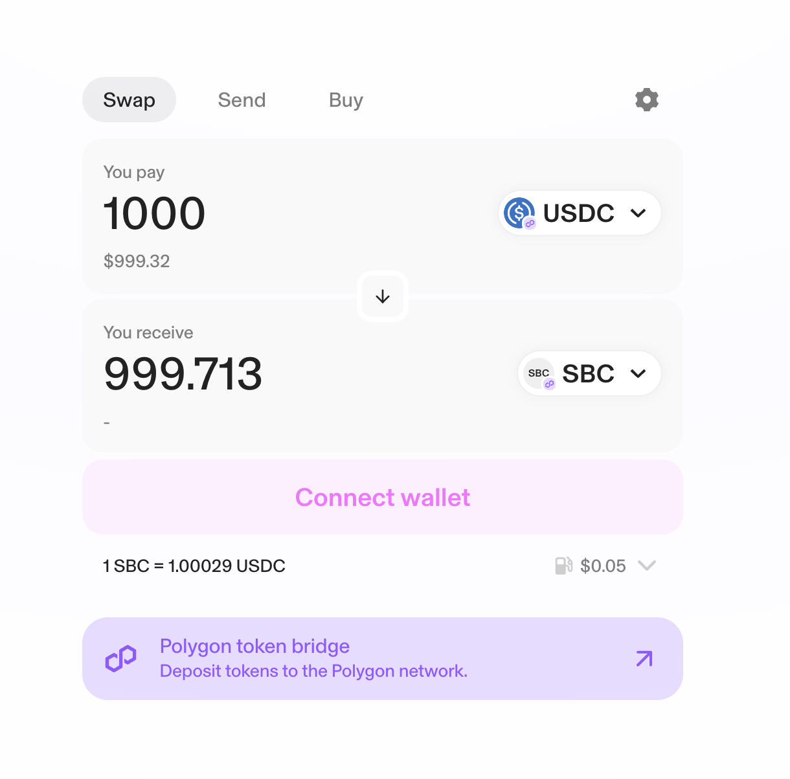

How to launch a stablecoin


We’ve learned a lot over the past year about How to launch a stablecoin and hope to share what we believe are best practices and common themes to design a new program to be successful.
Stablecoin liquidity
It’s important to establish enough initial liquidity to make the stablecoin accessible in DeFi, support a wider range of on and off-ramps, and get listed on popular token registries.
We’ve found Uniswap v3 to be a very friendly DEX on EVM chains, and Orca on Solana. These DEXs support concentrated liquidity which improves efficiency and greatly reduces the amount of liquidity that needs to be posted. We’ve found $20K-$50K initial liquidity to often be sufficient in the first phase of a program.

Establishing relationships with market makers like Keyrock is important to help manage liquidity. We’re happy to make introductions to market makers and are also working on ways to help projects more easily manage liquidity themselves.
On & off ramps
Stablecoins issued by Brale are automatically listed on Brale’s exchange and made available to U.S. businesses for on and offramping with USD or USDC.
To open access for consumers, providers like Decent automatically make the stablecoin available via card and bank transfer once liquidity is available on-chain. Through Brale’s relationship with Coinflow, stablecoins can be off-ramped to user’s bank accounts in realtime. These are wonderful options for new stablecoin programs as they don’t require any listing fee or integration.

As stablecoin liquidity grows, it’s helpful to get supported on additional on-ramps, centralized exchanges, and custodians. We’ve found BitGo to be very friendly to new stablecoins, where listing on the Go network opens up access to a broad range of businesses.
Token registries
To boost awareness, it’s helpful to get listed on industry-leading token registries. This includes claiming your token profile on each explorer (see SBC on Polygon), adding your stablecoin to token lists, and applying to be listed on popular token sites. We’ve compiled the most important of these below.
Etherscan
etherscan.ioSolscan
solscan.ioPolygonScan
polygonscan.comCoinGecko
coingecko.comCoinMarketCap
coinmarketcap.comDefiLlama
defillama.comUniswap Token List
github.comJupiter Token List
github.comEcosystem integrations
Brale is also integrated with an ecosystem of custody, payments, and card issuance applications that help increase the utility for new stablecoins. For example, Rain Cards makes it easy to spend stablecoins with credit cards wherever Visa is accepted.
We’re excited to grow the ecosystem and hope to make issuing digital dollars as easy as publishing a website.
If you’re exploring a new stablecoin, please reach out to our team.